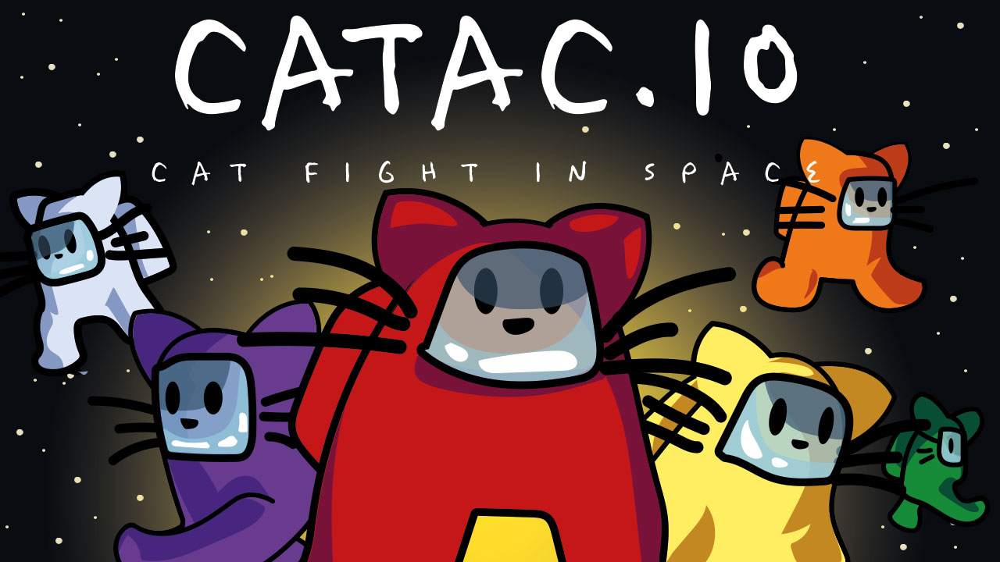

Introduction
Catac.io is a fast-paced multiplayer .io action game where you battle as an astronaut cat in a space arena. Inspired by the traitor mechanics of Among Us, this game drops you into a chaotic battlefield where every player is armed with a melee weapon and looking for victims. What makes Catac.io unique is its dynamic weapon evolution; as you eliminate opponents and collect their remains, your blade physically extends, transforming from a small knife into a giant sword or spear. Players love the game for its simple yet highly addictive combat loop, the satisfying progression of growing weapons, and the fun customization options like pets and hats. It perfectly blends survival, arena combat, and io-style progression into one highly entertaining package.
Getting Started

Starting your journey in Catac.io is straightforward. Simply load the HTML5 game in your browser and spawn into the space arena as an astronaut cat. Your primary objective is to roam the field, stab your rivals with your starting knife, and earn coins from victories. The controls are intuitive and typical for .io games. Your character will continuously follow and move toward your mouse cursor, allowing for smooth navigation around the arena. The left mouse button is your action key, which triggers an acceleration boost to help you chase down prey or escape dangerous situations. In your first few minutes, focus on understanding the core survival loop. Avoid players who already have large blades, as their extended reach makes them deadly. Instead, look for smaller, weaker cats or the remains left behind by defeated enemies. Collecting these remains and earning points from kills is essential, as it not only upgrades your weapon length but also provides the coins needed to buy new skins, pets, and funny hats in the shop.
Basic Tips
To survive your first matches in Catac.io, keep these essential tips in mind. First, mind your weapon size. Your blade grows as you get kills. While a giant sword deals more damage and has better reach, it also makes you a larger target. Second, use acceleration wisely. Left-clicking gives you a speed boost. Do not spam it. Save your acceleration for the final moment of an attack to close the gap, or use it to instantly retreat when a player with a giant sword approaches. Third, scavenge remains. You do not always have to get the killing blow to benefit. Collecting the remains of defeated enemies scattered across the arena helps you earn points and upgrade your weapon without risking a direct fight. Fourth, circle strafe. When engaging in melee combat, keep your mouse moving in a circle around your opponent to make it harder for them to predict your movement.
Advanced Strategies

Once you master the basics, employ these strategies to dominate the space arena. First, weapon reach exploitation. As your blade evolves into a giant sword or spear, your hitbox for attacking increases significantly. Use this to your advantage by attacking from just outside the range of smaller knives. Second, baiting the boost. Since left-clicking accelerates your cat, you can fake an attack to force your opponent to use their boost. Once their acceleration is on cooldown, immediately use yours to close the distance and secure the kill. Third, third-party interventions. In the chaotic space arena, fights often attract bystanders. If you see two players clashing, wait for the winner to finish their attack animation. The victor will likely be vulnerable, making them an easy target for you to swoop in and collect their remains. Fourth, corner trapping. Use the arena layout to push opponents toward edges where their movement options are restricted.
Pro Tips
To separate yourself from the average player, master these expert techniques. First, micro-adjustments. Instead of moving your mouse in large arcs, use tiny, rapid micro-adjustments when your blades are locked in a clash. This unpredictable movement will help your blade slip past theirs to land the fatal strike. Second, boost cancellation. Learn to cancel your acceleration animation by quickly changing direction. This advanced movement tech can make your cat incredibly difficult to hit and allows for sudden, unpredictable lunges. Third, economy management. Do not spend all your coins on cosmetics immediately. Save up and focus on grinding for weapon upgrades, because a fully upgraded giant spear is far more valuable than a funny hat in early-game survival.
🎮 Controls & Mechanics Deep Dive
Before you can dominate the space arena, you need to understand exactly how your astronaut cat moves and fights. Catac.io isn’t just about clicking on people; it’s a game of momentum, spatial awareness, and hitbox manipulation. If you’re coming from other .io games, the physics here will feel a bit more slippery and deliberate.
Your movement is strictly momentum-based. When you change direction, your cat doesn't stop on a dime. Instead, you drift slightly, which means you need to anticipate your turns. This is where the turning radius mechanic comes into play. When you’re a small, knife-wielding rookie, your turns are incredibly sharp. But as you gorge on remains and your weapon evolves into a massive broadsword or a giant spear, your turning radius widens significantly. You become a sweeping force of nature, but you'll struggle to navigate tight corners.
Let's talk about hitboxes and collision. Your actual vulnerability lies in your cat's body. The weapon itself is pure danger. When your blade extends, the game calculates its physical length in real-time. A longer weapon means a wider attack arc, but it also means your weapon can get "stuck" on arena obstacles like asteroids and space debris if you aren't careful. Bumping into walls with a maxed-out spear will halt your momentum completely, leaving you wide open for a backstab.
Scoring is directly tied to your weapon's evolution. Every time you eliminate an opponent, they drop a cluster of "stardust" remains. Running over these doesn't just bump your score; it physically adds pixels to your blade's length. The more you eat, the longer you get, creating a snowball effect that rewards aggressive play but punishes greedy overextension.
🎯 Game Modes Breakdown
Catac.io offers a few distinct ways to play, each requiring a slightly different mindset. While the core melee combat remains the same, the objectives and lobby dynamics shift depending on what you queue for.
- Free-For-All (FFA): This is the classic, bread-and-butter mode. You’re dropped into a medium-sized arena with up to 15 other players. It’s every cat for themselves. The goal is simple: be the last one standing or reach the top of the leaderboard. FFA is pure chaos and the best mode for practicing your 1v1 dueling and positioning.
- Team Battle: You’re sorted into either the Red or Blue crew. The arena is slightly larger to accommodate the teams. Here, you can coordinate pincer attacks with your teammates. The catch? You can't damage your own team, but you can accidentally block their swings or steal their stardust remains. Communication and spatial awareness are key to not getting in your buddy's way.
- Battle Royale (Shrinking Arena): This mode starts with a massive map and a large player count. Every 60 seconds, the playable space arena shrinks, forcing everyone closer together. The early game is about farming small kills and growing your weapon safely. The endgame is a claustrophobic nightmare where giant spears are swinging everywhere. Positioning near the edge of the safe zone is a death sentence here.
- Practice Mode: Don't sleep on this! It’s an empty arena where you can just run around and eat spawned stardust. Use this to figure out exactly how long your weapon gets at different stages, and practice your swinging timing without the stress of getting ganked.
🚀 Advanced Strategies & Pro Tips
Once you’ve got the basics down, it’s time to separate yourself from the casuals. Here are some advanced techniques that the top-ranked players use to absolutely terrorize the lobby.
The "Half-Spin" Feint: Because your weapon swings in an arc based on your momentum, you can fake an attack. Dash toward an opponent, then rapidly flick your mouse in the opposite direction right before you hit them. They will likely dodge the way you were originally aiming, putting them right back into your actual attack path. It takes practice to time the flick, but it’s incredibly deadly.
Weapon Length Management: Bigger isn't always better. If you max out your weapon into a giant lance, you lose all your agility. Pro players will intentionally avoid eating stardust for a few seconds to keep their weapon at a "mid-tier" length. This keeps their turning radius tight. When a giant, slow opponent turns their back, you dash in with your mid-sized weapon, get the kill, and then eat their remains to power up for the next fight.
Corner Trapping: Use the arena’s physical boundaries to your advantage. If you have a longer weapon than your opponent, don't chase them into the open middle of the map. Instead, herd them toward a wall or a large asteroid. Once their back is against the geometry, they can't dodge backward. You just need to swing horizontally and let your extended blade do the work.
The "Vacuum" Chain: When you kill someone, the stardust drops in a small cluster. If you kill someone while you are already moving through a cluster of remains, the game registers a "chain pickup." This gives you a brief 1.5-second speed boost. Use this boost to instantly close the gap on a fleeing enemy or to escape a bad engagement.
❓ Frequently Asked Questions
Is Catac.io completely free to play?
Yes, 100%. Like most .io games, it’s completely free to play right in your web browser. There are no pay-to-win mechanics, though you might see optional cosmetic skins for your astronaut cat that you can unlock by playing.
Can I play Catac.io on my phone or tablet?
You can! The game features a responsive touch control layout for mobile devices. However, because the game relies heavily on precise mouse flicks and momentum control, it is highly recommended to play on a PC or laptop with a mouse and keyboard for the best experience.
How do I play with my friends?
When you launch the game, look for the "Create Party" or "Private Lobby" button on the main menu. You can generate a unique room code or a direct link to share with your friends. Just make sure you all select the same game mode before starting the match.
What are the system requirements to run the game smoothly?
Catac.io is built on WebGL, meaning it’s surprisingly lightweight. You don’t need a gaming rig. Any modern computer or laptop from the last five years with an updated browser (Chrome, Firefox, Edge, or Safari) will run it perfectly. Just make sure you have a stable internet connection, as lag will ruin your timing in duels.
How do I get my weapon to grow faster?
Focus on multi-kills and chaining. If you can secure two kills in rapid succession, the game awards a "combo multiplier" to the stardust dropped by the second victim. Additionally, playing aggressively in the early game and controlling the center of the map ensures you have first dibs on the remains of players who kill each other.
Conclusion
Catac.io offers a thrilling, fast-paced arena experience where every kill brings you closer to wielding a massive space sword. With its unique weapon evolution, intuitive controls, and rewarding shop system, it is a must-play for fans of .io action games. Jump into the space arena, sharpen your blades, and show everyone why you are the ultimate astronaut cat killer!